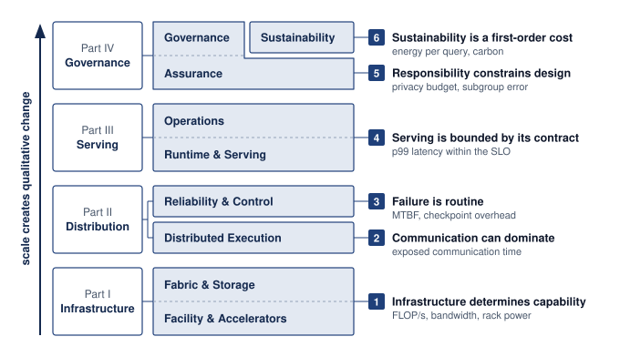

17 Conclusion

Purpose

Fleet stack focus for this chapter.
Why must the unit of machine learning systems design become the fleet rather than the model?
Machine learning at fleet scale is judged by the whole system, and a local improvement can move cost into a layer that its designer did not measure. Faster computation can expose a network bottleneck; larger jobs can lose more work to failure; a service that meets latency targets can still lack evidence required for deployment. The model remains central, but its accuracy and execution speed do not determine whether the complete system delivers useful work. Adding accelerators is therefore a design decision about shared resources and obligations, rather than a purchase of more arithmetic. If communication and recovery consume the saved execution time, the expansion can increase cost without improving progress. If the resulting service cannot preserve availability or account for its effects on users, successful training does not establish readiness for deployment. Single-node reasoning remains necessary because every participant still has local limits, but it cannot settle decisions whose consequences cross machines, teams, and operating boundaries. The engineering responsibility is to connect those consequences before accepting the design. That requires evidence about what improves, what becomes more constrained, and who owns the costs transferred elsewhere. A defensible decision may expand the fleet, change how work is distributed, or postpone release until the operating requirements can be met. In C³ terms, the task is to follow the binding compute, communication, or coordination constraint across layers and keep its displaced costs visible.
Learning Objectives
- Distill this book into the six principles and a constraint map for distributed ML systems
- Diagnose a fleet design’s binding C³ term using measured execution costs and failure exposure
- Analyze how infrastructure, distributed training, inference, operations, and governance interact across the fleet stack
- Translate security, fairness, privacy, carbon, and reliability obligations into measurable design constraints
- Defend a fleet expansion or model-release decision using fitted scaling-law gains, operational measurements, and governance evidence
17.1 Distilling Distributed ML Systems
A faster accelerator can finish its local work sooner yet leave the training job waiting on the same congested collective. Scale creates qualitative change because the binding constraint can leave the node. It moves into the fabric that carries gradients, into the recovery machinery that restores state after routine failure, into the service contract that decides whether capacity reaches users in time, and into the obligations that decide whether the service may run at all. The book opened on that transition, the scale moment, and on the empirical scaling laws of AI Scaling Laws that keep forcing it. Because each further reduction in loss demands a multiplicative increase in compute, demand for fleet capacity does not settle at the size where the last design worked. Each of the four parts since has answered a share of the question that transition raised by naming a constraint, the measurement that exposes it, and the mechanism that moves it.
↩︎ The scale moment and the qualitative shift to fleet-scale systems are established in The Scale Moment.
A frontier-model production system can span thousands of accelerators, with fabric links, storage tiers, schedulers, serving replicas, security controls, and governance checks supporting the same workload. Any one layer can bind the entire system. A slow checkpoint in the storage tier can waste an entire training window. A congested fabric across the interconnect can erase scaling gains from added compute. Underprovisioned capacity in the serving pool can turn model quality into user-visible latency. An unmeasured responsibility constraint can block deployment even after the technical system works. That coupling across the stack is what separates foundational ML engineering from distributed ML engineering. The single-node foundation, organized by the D·A·M lens of data, algorithm, and machine, already couples models, data pipelines, execution, and deployment constraints. Distributed ML engineering extends that reasoning to shared infrastructure, distributed protocols, and governance across a fleet.
↪ The single-machine foundation of data, algorithm, and machine is collected for reference in The D·A·M Taxonomy.
The physical substrate supplies the rates that higher layers inherit. Accelerator topology, data-loading throughput, and network contention constrain how the Distribution band partitions, synchronizes, and recovers work. The Serving band converts that coordinated execution into a service with latency, availability, and cost obligations. The Governance band determines whether the service remains secure, robust, sustainable, and accountable. Six principles state these inherited constraints as engineering claims, in the order of the book’s four parts.
Self-Check: Question
A team transitions an ML model from single-node workstation experimentation to a multi-data-center production service handling 50,000 queries per second with high-availability and regulatory compliance requirements. According to the chapter’s synthesis, which shift in engineering focus best characterizes this transition?
- Shifting from PyTorch tensor definitions to CUDA kernel compilation to maximize single-device arithmetic precision.
- Extending single-node reasoning about models, data pipelines, execution, and deployment to coupled fleet infrastructure, data center fabrics, distributed protocols, automated fault recovery, and governance frameworks.
- Shifting from empirical hyperparameter tuning to symbolic loss optimization across isolated server instances.
- Shifting from self-supervised pre-training objectives to supervised fine-tuning loops to eliminate inter-node network synchronization.
Order the four bands of the fleet stack from bottom (physical foundation) to top (governance and social constraints), reflecting how physical limits propagate upward to bound higher-level systems:
- The Fleet (Facility & Accelerators; Fabric & Storage)
- The Responsible Fleet (Assurance; Governance & Sustainability)
- Distributed ML (Distributed Execution; Reliability & Control)
- The Fleet in Production (Runtime & Serving; Operations)
True or False: In a distributed ML system, optimizing individual layers in isolation (such as independently maximizing storage IOPS, network bandwidth, or serving concurrency) guarantees optimal end-to-end system throughput.
Explain why any single constraint in the fleet stack, such as a slow storage checkpoint or an unmeasured governance requirement, can bind the entire production pipeline, even when compute accelerators operate at peak utilization.
17.2 Six Principles of Distributed ML Systems
When those inherited constraints surface in production, as a training run that stalls every few hours on a failed component or a serving pool whose tail latency spikes across a fan-out query, the failure comes from the fleet’s physical and institutional structure rather than an operator mistake. The six engineering practices introduced with the fleet stack describe how a fleet engineer responds to those realities, whereas the six principles of distributed ML systems describe what the fleet’s physical and institutional constraints make true, whatever the practice. Each condenses the part-level principles stated at the opening of its part: Part I’s fleet principles condense into the first, Part II’s distributed ML principles into the second and third (while its empirical scaling law supplies the demand side of the growth decision in section 17.3), Part III’s fleet-in-production principles into the fourth, and Part IV’s responsible fleet principles into the fifth and sixth. Each principle also explains why one of the practices is necessary rather than merely prudent. A fleet that loses training progress to routine interruptions must budget recovery as part of normal operation, which is why treating failure as steady state is a practice. A bottleneck that migrates whenever one term shrinks is why the engineer must expect it to move and measure the layers it moves into.
↩︎ The six engineering practices, from instrument first to co-design hardware with algorithms, are established with the fleet stack in The Fleet Stack and the Lighthouse Archetypes.
The Fleet Law, the distributed counterpart of the single-machine iron law, connects these principles to execution costs. It is the step-time equation of equation 1.3, unchanged:
\[ \DistributedStepTime(\DeviceCount) = \frac{\IronLawComputeTime}{\DeviceCount} + \CommunicationTime(\DeviceCount) + \SynchronizationTime(\DeviceCount) - \OverlappedTime \tag{1}\]
Infrastructure sets the per-device rates behind \(\IronLawComputeTime/\DeviceCount\) and the link bandwidths behind \(\CommunicationTime(\DeviceCount)\). Communication and waiting contribute to \(\CommunicationTime(\DeviceCount)\) and \(\SynchronizationTime(\DeviceCount)\); neither is guaranteed to shrink as \(\DeviceCount\) rises. Failure lands in the same terms. Checkpoint pauses, detection timeouts, and restarts add to \(\SynchronizationTime(\DeviceCount)\) averaged over the run. Asynchronous checkpointing and warm restart move part of that cost into \(\OverlappedTime\), and a rollback adds the lost steps back to the work the run must still complete. Serving applies the same accounting discipline to requests, including queueing and routing delay. Responsibility and sustainability add no new term, but they spend the existing ones. Verification work occupies compute, approval gates add coordination that no replica count removes, and every second of step time costs joules at the fleet’s average power. Their acceptance also requires evidence that execution time cannot supply, such as subgroup error rates, privacy accounting, and energy measured over a stated boundary.
↪ The term-by-term decomposition of the Fleet Law is developed in Component decomposition.
Placed on the fleet stack, the six principles follow its four bands (figure 1). The Infrastructure band determines physical capability. The Distribution band partitions execution and therefore carries both communication and failure recovery, one principle per row. The Serving band bounds runtime delivery by its contract. The uppermost Governance band carries two principles that divide it by obligation rather than strictly by row. Responsibility, placed beside the Assurance row, covers every obligation owed to the people the system affects, including both the security and robustness of the Assurance row and the fairness and accountability work that Responsible AI develops in the band’s top row. Sustainability, placed beside that top row, covers the resource obligation alone. The arrow that runs the length of the stack marks the scale moment. Rather than acting as a seventh principle, it is the premise on which this book opened, and crossing it is what turns each of the six from a local concern into a fleet-wide constraint.


The six principles therefore work as a decision map rather than a glossary (table 1). Each row links a principle to the question, metric, and practice an engineer uses when diagnosing a fleet-scale design, and to the part and chapters that develop it. The part order is an order of dependency, not a ranking of bottlenecks. The workload and its measurements determine which constraint binds, while the layered tiers in figure 1 locate the governing architectural band.
| Principle | Core question | Key metric | Practice it demands | Developed in |
|---|---|---|---|---|
| Infrastructure determines capability | What is possible? | FLOP/s, memory and bisection bandwidth, rack power | Co-design hardware with algorithms | Part I: Compute Infrastructure, Network Fabrics, Data Storage |
| Communication can dominate | What is the bottleneck? | Exposed communication time, scaling efficiency | Expect bottlenecks to migrate | Part II: Collective Communication, Distributed Training |
| Failure is routine | How do we recover? | MTBF, checkpoint overhead, rollback time | Treat failure as steady state | Part II: Fault Tolerance, Fleet Orchestration |
| Serving is bounded by its contract | What reaches the user in time? | ML productivity goodput, p99 latency within the SLO, cost per request | Reserve headroom for recovery and tail latency | Part III: Fleet Efficiency, Serving at Scale, Edge Intelligence, ML Operations at Scale |
| Responsibility constrains design | Who is affected? | Privacy budget, subgroup error rates, audit trails | Instrument first | Part IV: Security & Privacy, Robust AI, Responsible AI |
| Sustainability is a first-order cost | What is the cost? | kWh per training run, energy per query, carbon | Compound small efficiency gains | Part IV: Sustainable AI |
The first principle is that infrastructure determines capability. Physical infrastructure constrains both feasible configurations and attainable rates. Memory capacity and safe power and cooling envelopes limit how much state and active hardware a configuration can support. Cluster-wide bisection bandwidth instead limits how quickly distributed work can exchange data (principle 6); insufficient bandwidth can make a deadline or cost target unattainable without making the computation impossible. Storage sets a further ceiling, because accelerators that the data pipeline cannot feed sit idle regardless of their peak rate (principle 7). These are the memory, network, and energy walls of the scale moment, measured at the scale of the node, the fabric, and the facility. Partitioning, batch size, and communication scheduling determine how those limits bind, and mastering the fleet requires understanding them from chip-level thermal density to cluster-wide bisection bandwidth.
The second principle is that communication can become the binding term at scale (Jiang et al. 2024; Narayanan et al. 2021), with its cost set by the bandwidth-latency trade-off (principle 5) inside the Fleet Law’s \(\CommunicationTime(\DeviceCount)\) term. Communication intensity, the ratio of bytes crossing the network to local FLOPs, indicates network demand relative to arithmetic. Whether that demand dominates also depends on achieved compute and network rates, message sizes, topology, and overlap. Gradient synchronization and straggler effects must therefore be measured on the synchronous step’s critical path rather than inferred from byte volume alone.
↩︎ The communication-intensity ratio is established in Communication intensity (the CI ratio).
1 Ring AllReduce: A collective that sends \(2(\DeviceCount-1)\CollectivePayloadSize/\DeviceCount\) bytes per worker and receives the same amount for message size \(\CollectivePayloadSize\), giving \(\RingAllReduceCompletionTime \approx 2(\DeviceCount-1)\MessageStartupLatency + \frac{2(\DeviceCount-1)}{\DeviceCount}\frac{\CollectivePayloadSize}{\LinkBandwidth}\) under the \(\MessageStartupLatency\)-\(\LinkBandwidth\) communication model, with \(\LinkBandwidth\) denoting bandwidth in each full-duplex direction. The coefficient approaches 2\(\times\) message volume per worker as \(\DeviceCount\) grows, while remaining bandwidth-optimal for large messages.
Collective communication algorithms, including Ring AllReduce,1 popularized for deep learning by Horovod (Sergeev and Balso 2018), gradient compression, and overlapping computation with communication, address communication bottlenecks. For dense collective workloads, conventional oversubscribed fabrics often bottleneck, motivating high-bisection fabrics and transport choices matched to ML communication patterns. Recognizing when communication is the active constraint clarifies when algorithmic optimizations will help and when they merely shift work between equally constrained resources, the displacement of overhead (principle 14) that makes bottlenecks migrate. Expanding the fabric across thousands of nodes also multiplies the components that a job needs at the same instant, and that multiplication makes failure routine.
↩︎ Ring collectives, communication overlap, and gradient compression are established in Collective Communication.
The third principle is that failure is routine. A job that needs many components at once can encounter interruptions frequently enough that recovery becomes normal operation. The reliability gap in The reliability gap follows from equation 1.2. Under it, a job that needs every one of its components at once, each independently available with probability \(\ComponentAvailability\), sees its availability decay exponentially in the number of components it requires. Meta’s experience training Llama 3 on 16,384 GPUs, 16 times the Archetype A reference cluster, documented 419 unexpected interruptions over 54 days, averaging one unexpected interruption every 3.1 hours (Dubey et al. 2024). A failed rank can stall every other rank in its collective. Under full-job checkpoint recovery, the affected job rolls back to its last checkpoint; other jobs in the fleet need not roll back. For a fixed amount of lost wall-clock progress, wasted accelerator-time grows with the size of the affected job, which is why checkpoint cadence and recovery architecture are first-order design dimensions.
Architects must embed failure handling from the beginning. Checkpointing strategies balance write overhead against expected lost work, and the Young-Daly interval (principle 13) estimates that balance under its failure and checkpoint-cost assumptions. Elastic training supports changing cluster membership, while graceful degradation preserves a defined level of service as capacity diminishes. Each mechanism needs a tested recovery contract; its name alone does not establish that progress or service quality survives a failure. Recovery should automate known failure paths and escalate cases whose safe response requires investigation. Recovery also needs capacity. A restarted synchronous job makes progress only when the scheduler can again grant it an atomic, topology-feasible gang allocation (principle 15). That is why fleet orchestration keeps spare capacity, preempts lower-priority work, and admits only allocations a job can actually use. Coordination, the third C³ axis, is not confined to this principle. It is paid in recovery and gang scheduling here, in request routing for serving, and in the approval gates of governance.
↩︎ Checkpoint cadence, mean time between failures (MTBF) analysis, and elastic recovery protocols are established in Fault Tolerance.
2 Tail latency: The estimate is one minus the probability that every server answers within its own percentile, which under independence is the per-server probability raised to the number of servers; Load Balancing and Request Routing analyzes the tail effects it summarizes. Shared congestion correlates server delays, so a real fleet can sit above or below this figure, and the independence assumption has to be checked against measured traces.
Communication and failure together constitute the operational reality of the Distribution band. Deployment carries both into a setting where the unit of work is a user request rather than a training step, which gives the fourth principle, that serving is bounded by its contract. The accounting begins before any request arrives. The ML goodput decomposition (principle 16) assigns each interval of capacity that the built fleet loses to exactly one of its three factors (scheduling, runtime, or program goodput), so that every loss has one owner. A serving fleet’s useful capacity is then the work it completes within its latency, availability, and cost targets, not the work its accelerators execute in isolation, which is what SLO Goodput and the Serving Tax measures as service-level objective (SLO) goodput. Production inference that waits for every worker in a fan-out inherits tail effects (Dean and Barroso 2013), because completion depends on the slowest required response. A request that touches 100 servers has a 63.4 percent chance that at least one of them responds beyond its 99th-percentile latency when server delays are independent,2 so a latency that is rare for one server becomes the common case for the request. Routing is where coordination enters the request path. Probing two of \(\ReplicaCount\) replicas and sending the request to the less loaded (principle 19) sharply shortens the longest queue in the idealized balls-into-bins model, at the cost of only two probes. On live traffic the gain still depends on arrivals, service times, and how fresh the load estimate is, so it narrows the tail rather than bounding every request’s latency.
↩︎ The power of two choices and the queue-length bounds behind it are established in The power of two choices.
Inside each replica, the memory wall returns as a serving constraint. Compute (TFLOP/s) can be abundant while memory bandwidth (GB/s) gates small-batch autoregressive decode (principle 18), because weight and KV-cache traffic from high-bandwidth memory (HBM) leaves compute units underused. Batching amortizes weight reads across output tokens, so the binding constraint can shift toward compute, KV traffic, or the latency budget. A replica’s execution envelope must therefore be measured before any fleet-level policy is chosen. The contract also has a lifetime. A heavily used model can spend more on inference than it did on training (principle 17), so the cost per request, not the one-time training bill, eventually dominates what the model costs to own.

Small-batch decode can sit left of the roofline ridge.
Beyond the data center, the contract takes other forms. On a phone-class device the contract is the device’s own power, thermal, and foreground-latency envelope, and the device enforces it by admitting background work, including local adaptation, only when the envelope has room. That admission policy has a consequence that reaches back into training. Only devices whose policy accepts the work take part in adaptation, so the serving-side contract also decides whose data the shared model learns from (principle 20), a bias the fifth principle must then account for. Across a platform of hundreds of models, staged rollouts and per-service reliability budgets enforce the contract release by release, so every release must carry evidence that its targets still hold. Once the fleet can deliver a service, governance determines whether it is allowed to.
↩︎ On-device adaptation within phone-class power and thermal envelopes is established in Energy, heat, and background admission.
The fifth principle is that responsibility constrains design. Responsible AI translates risk-management frameworks into engineering constraints (Tabassi 2023). Safety-specific risks such as reward hacking, distribution shift, and scalable oversight show why those constraints need implementation mechanisms (Amodei et al. 2016). Fairness, transparency, accountability, privacy, and safety are first-class requirements that shape system architecture throughout the ML lifecycle. The part-level principles behind this one span provenance, privacy, robustness, and feedback. A model can be trusted only as far as the verified record of its data, code, and weights reaches (principle 22). Released outputs can disclose what a model learned (principle 23). Robustness evaluation and defenses require mechanism-specific resource budgets (principle 24). Deployed decisions can shape future training observations (principle 27).
The fairness impossibility theorem (principle 26) shows why some requirements cannot be satisfied by tuning alone. With unequal base rates and imperfect prediction, a risk score cannot be both calibrated within each group and balanced across groups within each outcome class (Kleinberg et al. 2017). This is the score-level counterpart of the conflict between equal opportunity and demographic parity in the admissions example of Why the fairness criteria conflict. The deployment therefore needs justified criteria, evidence that they hold, and an owner authorized to respond when they fail. Monitoring exposes supported disparities but cannot choose the criterion or provide a remedy by itself. These obligations belong in the design alongside performance requirements, which is why the practice this principle demands is to instrument first. Subgroup error rates, privacy accounting, and audit trails must be collected before the decision they are meant to justify, because a disparity that was never measured cannot be detected, attributed, or remedied after deployment. Environmental responsibility extends the Governance band into the physical resource budget.
↩︎ The calibration and score-balance conditions that the fairness impossibility theorem relates are established in Why the fairness criteria conflict.
The sixth principle is that sustainability is a first-order cost. Environmental impact of large-scale ML elevates resource efficiency to a primary engineering constraint (Strubell et al. 2019; Patterson et al. 2021). The energy-scale invariant of The energy accounting boundary supplies the accounting discipline, a fixed boundary for useful work and for the energy it consumes. The Fleet Law explains why exposed communication and synchronization cost joules as well as seconds, since a step’s energy is approximately its average power times \(\DistributedStepTime(\DeviceCount)\). The Jevons paradox of AI adapts Jevons’s resource-efficiency argument (Jevons 1865) to explain why hardware efficiency gains alone do not eliminate power and carbon costs (principle 25). Cheaper computation can expand deployment, so usage growth can offset per-query savings. An absolute carbon budget bounds emissions only when accounting and admission decisions enforce it over the stated lifecycle and time horizon.
↩︎ Carbon accounting, energy metrics, and Jevons rebound effects are established in Sustainable AI.
3 Lifecycle assessment: Hardware Lifecycle and E-Waste evaluates environmental impact across a system’s lifespan, including embodied carbon from hardware manufacturing. Embodied emissions can become a substantial share of total impact on clean grids or when hardware is lightly used.
Sustainability thus becomes an engineering discipline with its own accounting chain, in which IT energy scaled by the facility’s power usage effectiveness and the grid’s carbon intensity gives operational emissions, and the embodied carbon of manufacturing the hardware joins the total. Two links show how far the chain can swing. Training GPT-3 consumed about 1,287 MWh, roughly 120 US household-years of electricity (Li 2020), and the same energy drawn from Poland’s coal-heavy grid emits about 41× the carbon it would on Quebec’s hydroelectric grid. The chain also explains the practice this principle demands. Small efficiency gains compound across every accelerator and every query in the fleet, but usage growth can absorb them, so compounding efficiency bounds total emissions only when an absolute budget caps the total. Carbon-aware scheduling, lifecycle assessment,3 and efficiency optimization are the engineering means of meeting that budget.
↩︎ The operational and embodied carbon calculation is established in Carbon Footprint Calculation.
Taken together, the six principles describe the qualitative change that scale produces across a fleet. Each larger regime brings behavior that emerges from familiar mechanisms, as the scale moment first showed. A training job that scales from 8 GPUs to 8,000 can meet communication bottlenecks, load imbalance, or synchronization overhead that were negligible at 8, and a serving fleet handling a million requests a day expects a one-in-a-million per-request failure about once a day. Stragglers that bottleneck clusters, network partitions that split training, and heterogeneity across hardware generations that complicates load balancing therefore become routine design inputs rather than anomalies. Because empirical scaling laws (principle 9) keep carrying teams that pursue lower loss into larger regimes, a production design must weigh the quality gain those laws predict against the full-stack costs the six principles govern.
Self-Check: Question
A synchronous distributed training job achieves 94% linear scaling efficiency on 8 GPUs. When scaled to 8,000 GPUs on the same network fabric without changing hyperparameters, scaling efficiency plummets to 38%. Cluster telemetry reveals that per-device arithmetic execution speed remained constant, but workers spend over 55% of step time waiting at collective barriers. Which of the six principles best explains why small-scale profiling failed to forecast this collapse?
- Communication can dominate, because collective synchronization, fabric contention, and straggler waiting grow with worker count while each device’s share of the compute shrinks, so the exposed communication and synchronization time that is negligible on 8 GPUs becomes most of the step on 8,000.
- Failure is routine, because the cluster experiences silent hardware data corruption that forces the optimizer to recalculate gradient steps.
- Infrastructure determines capability, because 8,000-GPU clusters automatically downclock GPU core frequencies by 60% to comply with data-center power capping.
- Sustainability is a first-order cost, because thermal throttling occurs only when aggregate cluster power exceeds one megawatt.
An inference optimization team profiles an autoregressive LLM decode engine on an H100 GPU and finds that realized throughput is only 12% of theoretical FP16 tensor core peak FLOP/s, even though
nvidia-smireports 98% GPU utilization. The execution profile shows that execution time is dominated by matrix-vector kernels (one weight matrix times one activation vector) with a batch size of 1, and measured HBM traffic approaches sustainable bandwidth with stable clocks. Applying the chapter’s memory wall and serving principles, what is the root cause of this behavior, and what is the proper engineering response?- The GPU arithmetic units are saturated; the team must upgrade to an accelerator with higher FP16 peak TFLOP/s to unblock the matrix kernels.
- The low realized throughput indicates severe GPU thermal throttling; the team should increase cooling fan speeds and lower clock targets.
- High
nvidia-smiutilization proves compute saturation; the team should convert model weights to FP32 to ensure the arithmetic units perform more floating-point work per cycle. - Decode is memory-bandwidth bound because loading the full parameter matrix for a single token yields an arithmetic intensity well below the hardware roofline ridge; the team should evaluate batching to reuse weights, quantization to reduce weight bytes, or tensor parallelism to distribute work and memory traffic, subject to latency, quality, and communication costs.
Meta documented that training Llama 3 on 16,384 GPUs over 54 days experienced 419 unexpected interruptions, corresponding to an average Mean Time Between Failures (MTBF) of approximately 3.1 hours. Which systems invariant does this empirical data establish for frontier training?
- Frontier clusters are poorly engineered, and hardware reliability should be improved until a 16,384-GPU cluster operates for months without interruption before training begins.
- In synchronous distributed training across thousands of devices, cluster-wide failure is routine and continuous; checkpointing cadence, multi-tier storage offload, and automated recovery must be designed into the architecture from inception.
- Failures at this scale are primarily caused by software syntax bugs in user-level Python code, so rewriting training scripts in C++ eliminates the need for fault tolerance.
- Checkpoint overhead can be ignored because a 3.1-hour failure cadence leaves sufficient time for manual cluster inspection and restart by human operators.
True or False: According to the Jevons paradox of AI, doubling the energy efficiency of accelerator silicon (halving the joules consumed per token generated) guarantees a 50% reduction in total data center energy consumption for an enterprise ML fleet.
Under the Fleet Law (\(\DistributedStepTime(\DeviceCount) = \frac{\IronLawComputeTime}{\DeviceCount} + \CommunicationTime(\DeviceCount) + \SynchronizationTime(\DeviceCount) - \OverlappedTime\)), explain why adding accelerators to a distributed training cluster eventually produces diminishing returns (distributed Amdahl’s law), and state three concrete architectural techniques that reduce \(\CommunicationTime(\DeviceCount) + \SynchronizationTime(\DeviceCount)\) or increase \(\OverlappedTime\).
Perform the quantitative calculations for the two scaling phenomena analyzed in the chapter:
- An inference service fans out each user request across 100 independent leaf servers. If each server independently has a p99 tail latency of \(\ge 200\text{ ms}\) (a 1% chance of being slow), calculate the probability that the user request hits at least one slow server.
- In an equal-work, barrier-dominated synchronous training run of 8,000 GPUs with negligible other overhead, explain why a single straggler GPU running at 80% speed drops overall cluster throughput by 20% rather than by \(\frac{1}{8,000} \approx 0.0125\%\).
17.3 The Complete Production System
A team that doubles its training cluster to chase the next point on a scaling curve halves the ideal arithmetic time per step, yet the added accelerators also increase collective traffic, shorten the interval between hardware interruptions, and draw against a fixed facility power budget. Empirical scaling laws set the demand for that fleet growth and the Fleet Law (equation 1) sets its price, so together they say when growth pays and where it breaks. The scaling curve estimates what growth buys; it does not oblige an organization to buy it. Scaling pays only while the predicted quality gain justifies what the fleet charges across every term that moves with \(\DeviceCount\). Increasing \(\DeviceCount\) reduces the ideal compute term \(\IronLawComputeTime/\DeviceCount\) for fixed work and unchanged per-device rates, whereas \(\CommunicationTime(\DeviceCount)\), \(\SynchronizationTime(\DeviceCount)\), and interruption exposure depend on the partition, schedule, and component count and carry no such guarantee. Within a fixed facility, the power and cooling envelope does not grow with the job, and a successful model then pays its serving cost for as long as it runs. Growth can therefore break on either side. On the model side, the breakdown conditions of Possible Scaling Breakdowns mark where extrapolating a fitted quality curve becomes unreliable, for example when model capacity outgrows the available tokens or added data stops supplying new information. On the systems side, the scaling wall of The mathematics of scaling efficiency marks where added communication and coordination consume the compute time that added accelerators save (principle 12), while deliverable site power caps the configuration regardless of how work is partitioned. A complete production design has to evaluate both sides together.
Consider Archetype A (GPT-4/Llama-3), whose running instance in this book is a GPT-3-class dense transformer trained with mixed precision on a reference cluster of 1,024 GPUs and then shipped into a global serving fleet. Checkpoint bursts must land without starving the data loaders, while collective results must arrive before the computations that depend on them. Communication can overlap independent work, but its exposed remainder delays progress. At that scale, recovery planning uses observed write costs and failure rates, with the Young-Daly interval supplying an approximation where its assumptions hold (Young 1974; Daly 2006). Serving SLOs require headroom for rollback and fallback, while governance controls enforce approved conditions on which data, models, and outputs may reach users. These are coupled rates, budgets, failure exposures, and policy constraints that must be designed before deployment.
The production system begins with physical capacity, but capacity matters only when the rates line up. Physical compute infrastructure supplies accelerators, power, cooling, and fabric. The data tier determines whether data can arrive fast enough. Collective communication determines whether workers can synchronize without turning the network into the bottleneck. These subsystems must be co-designed: data ingestion must meet accelerator consumption, checkpoint writes must fit the recovery budget, and the fabric must carry the actual collective traffic. These are distinct rates; matching them to workload demand matters more than making their raw bandwidths equal.
Parallelization strategies must fit those physical rates and the expected failure pattern. Data parallelism, tensor parallelism, and pipeline parallelism are not interchangeable templates; each changes memory pressure, communication volume, checkpointing behavior, and scheduler complexity. Hybrid strategies become useful only when the surrounding storage, fabric, and recovery design can support the shape of the partition.
↩︎ How data, tensor, pipeline, and hybrid partitioning each move memory pressure, communication volume, and the pipeline bubble is established in Parallelism Strategy Comparison.
Serving adds a separate acceptance boundary. The contract of the fourth principle judges the model by its latency, availability, and cost on live traffic, whether it runs in a data center replica or on a phone-class device. Some security and robustness controls execute on the request path; others operate during training, release review, or asynchronous monitoring. Each needs an evidence and response path suited to its obligation. Training throughput therefore does not establish that a model will meet live latency, recovery, security, subgroup, and carbon requirements. A fleet expansion raises two linked decisions, whether to accept the larger training job and whether to release the model it produces, and each needs its own evidence.
To evaluate the first of those decisions on the Archetype A baseline, suppose a proposed expansion doubles the reference cluster to 2,048 GPUs while retaining the fabric and checkpoint tier. Because doubling \(\DeviceCount\) halves the ideal \(\IronLawComputeTime/\DeviceCount\) term, the first measurement is whether that saving survives the resulting changes in \(\CommunicationTime(\DeviceCount)\) and \(\SynchronizationTime(\DeviceCount)\) and their overlap. The recovery side can be estimated before any measurement. Assume independent GPU failures at an identical constant rate, with each failure interrupting the job. Counting those failures alone at the registry mean time to failure (MTTF) of 50,000 hours per GPU, the job’s mean time between interruptions is that MTTF divided by \(\DeviceCount\), so it falls from 48.8 hours to 24.4 hours. At the Young-Daly interval of equation 7.7, the checkpoint-and-rework overhead is about \(\sqrt{2\CheckpointWriteTime/\SystemMtbf}\) of wall-clock time. The Young-Daly checkpoint interval shows that it therefore grows as \(\sqrt{\DeviceCount}\), so doubling the cluster multiplies it by about 1.41×. The model’s 2.45 TB checkpoint takes about 24.5 seconds to write at the registry checkpoint bandwidth, which puts the overhead at about 1.7 percent of wall-clock time on the reference cluster and about 2.4 percent on the expanded one. These figures are optimistic. They count GPU failures alone, while switches, network interface cards, and software add interruptions of their own. The full-system analysis in Checkpoint interval from failure analysis, which adds PCIe-switch and network-interface failures for a cluster of 10,000 GPUs, arrives at a correspondingly larger overhead from the same formula. Write contention with data loading or a changed checkpoint size would also require revising them.
These estimates still yield a decision rule. In this example, measured step time covers uninterrupted execution and excludes the checkpoint-and-rework overhead estimated separately. The retained-progress factor, the checkpoint-and-rework share of what Runtime Goodput calls runtime goodput, accounts for that excluded cost once, so a whole-run measurement that already includes recovery pauses must not be penalized a second time. Because only the fraction \(1 - \text{overhead}\) of each wall-clock hour produces retained training progress, total run time for fixed work is proportional to \(\DistributedStepTime(\DeviceCount)/(1 - \text{overhead})\). Doubling the cluster raises the checkpoint-and-rework overhead from 1.7 percent to 2.4 percent, which leaves a slightly smaller productive fraction of each hour on the expanded cluster. To finish in less wall-clock time, the expanded cluster’s uninterrupted step-time speedup must therefore exceed the ratio of the reference productive fraction to the expanded productive fraction, \((1 - \text{overhead}_{\text{ref}})/(1 - \text{overhead}_{\text{exp}})\). Here that break-even step speedup is about 1.01×, so recovery overhead alone does not block the expansion. Short of a superlinear step speedup, however, the expansion cannot save accelerator-hours. Total accelerator-hours equal the GPU count times wall-clock run time. Even if uninterrupted step time halves at the ideal 2\(\times\) speedup, the higher checkpoint-and-rework overhead keeps the expanded cluster running for slightly more than half the original wall-clock duration, so doubling the GPUs increases total accelerator-hours by that same ratio, or about 0.7 percent. Every point of scaling efficiency lost to exposed communication raises that bill further. The expansion therefore buys calendar time with accelerator-hours and energy, and the communication measurement, not the recovery estimate, sets that price.
That price buys time, not quality, because the work is fixed. Quality enters the comparison only if the doubled cluster spends twice the compute instead of finishing sooner, and there the fitted scaling curve prices the gain. In the compute power law that Kaplan et al. (2020) fitted (charted in the scaling laws of AI Scaling Laws, Scaling Laws and Compute Optimality), loss falls as compute raised to the power \(-0.050\), so doubling compute multiplies loss by \(2^{-0.050} \approx 0.966\), a reduction of about 3.4 percent. A frontier run lies beyond the range that fit studied, so the figure shows the shape of the trade rather than this run’s gain. Each doubling buys the same fractional reduction, and therefore a smaller absolute one than the doubling before it, while its price, twice the accelerator-hours plus the recovery and communication overhead above, is paid in full every time.
The release decision then applies its own test. If the resulting model fails a release gate, the affected partition, placement, capacity allocation, or release plan must be revised before the release proceeds. The constraints behind those choices can conflict. A communication optimization may increase failure exposure, sustainability requirements may restrict infrastructure choices, and governance controls may consume serving latency or capacity. The displacement of overhead requires measuring those transferred costs before accepting a local speedup.
Archetype A traces only one path through these cross-layer trade-offs; taken together, the three lighthouse archetypes show that no single corner of the C\(^3\) taxonomy dominates. Each workload was first characterized by a representative binding term, and following each one up the fleet stack shows what each band, and the part of the book that develops it, added to that first characterization (table 2).
↩︎ The three lighthouse archetypes, and whether each stresses compute, communication, or coordination, are established in Three systems archetypes.
| Fleet stack band | Archetype A (GPT-4/Llama-3) | Archetype B (DLRM at Scale) | Archetype C (Federated MobileNet) |
|---|---|---|---|
| Representative C\(^3\) term | Communication, fleet-wide | Coordination, in routing and placement | Local compute, within the device envelope |
| Infrastructure (Part I) | Training state and checkpoints far exceed one accelerator’s memory, motivating partitioning; frequent tensor-parallel collectives favor the fastest interconnect domain | Multi-terabyte embedding tables exceed any device’s memory, and live feature lookups demand random-access storage | Phone-class power, memory, and thermal envelopes cap what local training can attempt |
| Distribution (Part II) | 3D parallelism and AllReduce must fit the step budget, and Young-Daly checkpoint cadence tracks interruptions measured in hours | Embedding sharding turns lookups into AllToAll exchanges whose hottest receiver sets completion time | Federated averaging replaces AllReduce, and over-selection with round deadlines bounds the wait for intermittent clients |
| Serving (Part III) | Small-batch decode is bound by memory bandwidth, so batching, KV-cache policy, and lifetime serving cost shape deployment | Feature-parallel sharding and routing must hold tail latency within budget at millions of queries per second | Adaptation runs only in admitted windows that preserve the foreground deadline, and rollouts span weeks of version skew |
| Governance (Part IV) | Data provenance, output leakage, and the energy of each training run gate release | Recommendations shape future training data, requiring fairness and drift evidence with accountable response across the serving lifecycle | Secure aggregation limits visibility of individual updates; differential privacy bounds released information under stated accounting assumptions; participation bias shapes whose data contribute |
Each column traces the constraints one workload encounters across the bands, while each row compares how a single band constrains different workloads. These constraints need not all bind at once. The representative terms describe operating regimes, not permanent assignments of archetypes to C\(^3\) terms. Federated MobileNet can be device-compute-bound during local training yet communication- or coordination-bound during a global round with intermittent clients. The same six principles apply to all three; the engineer must measure the workload at the relevant boundary before choosing which term to reduce. Because the binding term must be found rather than assumed, the book’s method reduces to a diagnostic procedure, a sequence of steps that is distinct from the principles it applies:
- Start with the observed symptom, the user-visible or operator-visible failure.
- Attach the metric that makes the symptom falsifiable.
- Map the symptom to C\(^3\) by identifying whether compute, communication, or coordination binds first.
- Locate the fleet-stack row that owns the intervention.
- State the cost that the proposed fix displaces elsewhere.
- Preserve the audit, safety, security, or responsibility evidence needed to justify the decision.
On the expanded cluster, a training run that falls behind its schedule exercises every step of that procedure. The schedule lag is the symptom, and the falsifiable metric is model FLOPs utilization measured per step, the measure of program goodput in Program goodput and its measure, which has dropped since the expansion. A step profile shows accelerators idle at gradient-synchronization barriers, but that wait alone does not distinguish slow collective transfer from ranks arriving late after computation, data loading, or scheduling delays. Aligned per-rank traces must therefore separate arrival skew from exposed collective completion time. When those traces show little arrival skew and increased exposed transfer time, they point to communication as the binding term and to the distributed-execution row, where the collective and its overlap are scheduled, as the owner of the intervention. A proposed fix such as gradient compression shrinks the exchanged bytes while displacing cost into convergence and accuracy risk, which means the evidence to preserve is the convergence and evaluation record showing that the compressed run still reaches its quality target. The same procedure redirects other symptoms. A fairness alert may point to missing labels, insufficient review capacity, or a serving-path threshold policy rather than model weights alone. A security incident may point to artifact provenance, access permissions, or rollback evidence rather than network perimeter failure. The discipline is to follow the constraint until the row that owns it and the trade-off it carries are visible. When the fix changes what ships, the evidence from the final step enters the end-to-end evaluation contract (principle 21), one versioned release record that binds the candidate to production-equivalent measurements, accountable acceptance authority, tested recovery, and explicit conditions that invalidate the evidence.
↩︎ The end-to-end evaluation contract and its versioned release record are established in The end-to-end evaluation contract.
Self-Check: Question
A data-center engineering team upgrades its training storage tier to provide 200 GB/s of sustained read bandwidth per node, while the inter-node network fabric remains at 25 GB/s per accelerator. Despite the 4x storage upgrade, overall training throughput on a multi-node Vision Transformer benchmark does not improve. Matched step traces show that data loading finishes before it is needed, ranks enter the collective with little arrival skew, and exposed gradient transfer saturates the relevant fabric links. Applying the chapter’s rate-matching and co-design principles, why did this upgrade fail to yield end-to-end performance gains?
- The matched traces identify exposed gradient transfer as the critical-path constraint; increasing already sufficient storage bandwidth does not shorten that transfer.
- Storage read bandwidth is only utilized during model checkpointing, so data loader throughput has zero impact on training iteration step time.
- Upgrading storage beyond 100 GB/s triggers automatic PCI Express bus arbitration throttles that disable GPU tensor cores.
- Vision Transformers cannot ingest training samples at rates exceeding 10 GB/s due to algorithmic limits in the self-attention mechanism.
The chapter maps the volume’s three running archetypes to representative constraints in stated operating regimes within the C\(^3\) taxonomy (Compute, Communication, Coordination). Which of the following mappings correctly identifies the first binding term and primary engineering focus for each archetype?
- Archetype A binds on Compute (matrix arithmetic); Archetype B binds on Communication (inter-data-center WAN bandwidth); Archetype C binds on Coordination (edge mesh consensus protocols).
- Archetype A binds on Coordination (scheduler dispatch); Archetype B binds on Compute (dense embedding multiplications); Archetype C binds on Communication (cellular 5G upload bandwidth).
- Archetype A binds on Compute (floating-point tensor cores); Archetype B binds on Compute (embedding lookups); Archetype C binds on Coordination (parameter server consensus).
- Archetype A (GPT-4/Llama-3) binds on Communication (gradient sync / activation transfer); Archetype B (DLRM at Scale) binds on Coordination (multi-TB embedding sharding / AllToAll routing); Archetype C (Federated MobileNet) binds on Compute (watt-scale device silicon / duty-cycle limits).
Order the 6 steps of the chapter’s procedural diagnostic workflow for resolving fleet-scale systems issues:
- Start with the observed symptom
- Attach the metric
- Map to C\(^3\) (Compute, Communication, Coordination)
- Locate the fleet-stack row
- State the displaced cost
- Preserve governance evidence
When optimizing distributed systems, reducing a bottleneck in one layer (such as increasing batch size to improve compute utilization) often shifts memory, latency, or recovery costs into adjacent layers; this fundamental trade-off dynamic is known as the ____ of overhead.
Apply the chapter’s 6-step diagnostic procedure to evaluate the following scenario: A distributed training team increases per-device microbatch size by 4x to raise GPU Model FLOPs Utilization (MFU) from 40% to 65%, but downstream live serving experiences severe p99 tail-latency spikes and automated checkpoint save times double.
17.4 Competencies Mastered
The proposed cluster expansion tests competence across the whole stack. Accepting it requires evidence that reduced compute time survives communication and recovery costs, while releasing its model requires a separate serving and governance judgment. Mastery means identifying those dependencies, choosing the measurements that test them, and defending the decision within the stated assumptions. Each band of the stack contributes one checkable part of that defense.
In the Infrastructure band, the governing question is which infrastructure limit binds the workload. An engineer who has mastered this material can match accelerator memory and compute to the model, provision storage and network bandwidth for the required rates, and account for power and cooling as capacity constraints rather than facilities details. In the expansion, that skill decides whether the retained fabric, checkpoint tier, and site power can carry 2,048 GPUs at all.
In the Distribution band, the governing question is how to make a workload larger than any single machine behave as one coordinated system. An engineer can analyze communication patterns, select a parallelization strategy, and estimate failure cadence from component MTTF, fleet size, and the failure-dependence model. Given a collective’s cost model, such as the Ring AllReduce cost recalled in section 17.2, the engineer can also predict which of its terms grows with \(\DeviceCount\). In the expansion, this band produced the recovery estimate and the break-even speedup, and it identified exposed communication as the measurement that sets the price.
In the Serving band, the governing question is how a trained model keeps serving value under live traffic. An engineer can budget the serving tax, select batching and placement policies, and monitor system performance and input distributions in production so that a working model does not become an inefficient or stale service. In the expansion, this band decides whether the released model meets its latency contract with headroom left for recovery.
↩︎ The serving tax that distributed execution adds to each request’s latency budget is established in SLO Goodput and the Serving Tax.
In the Governance band, the governing question is who bears the costs and risks of the system’s decisions. An engineer can translate security, privacy, fairness, robustness, and sustainability obligations into controls and evidence: access boundaries, privacy budgets, subgroup evaluations, adversarial, out-of-distribution, and concept-drift tests, incident procedures, and resource accounting. In the expansion, this band supplies the security, subgroup, and carbon evidence that the release decision requires. These competencies connect model development to the consequences of deployment. They also supply a test of transfer. When a new workload or substrate appears, the engineer must identify its accounting boundary, constraints, and evidence requirements before accepting an efficiency claim.
Self-Check: Question
An ML systems engineer tunes a 2,048-accelerator Ring AllReduce collective around the \(2(\DeviceCount-1)\CollectivePayloadSize/\DeviceCount\) bandwidth transfer model, chooses how to partition the model across nodes, and configures an automated Young-Daly checkpoint interval based on an observed 4-hour cluster MTBF. Under the chapter’s competency framework, which band of the fleet stack does this set of engineering activities belong to?
- Model architecture research, because it modifies neural network loss functions and attention head dimensions.
- Data curation engineering, because it filters low-quality web crawl text and deduplicates document tokens.
- The Distribution band, because it makes a workload larger than any single machine behave as one coordinated system while designing for routine hardware failure.
- Compliance legal auditing, because it verifies intellectual property licensing for training datasets.
A production recommender system maintains a pristine green status on its operational dashboard, meeting its p99 latency SLO of 45 ms and 99.99% service availability continuously for six months. However, business analytics reveals that user click-through rate (CTR) and conversion revenue have degraded by 18% over the same period. Why does the chapter’s production operations competency treat this service as failing despite perfect infrastructure SLOs?
- Any 18% drop in click-through rate indicates that the underlying network switches are silently dropping TCP packets during feature lookup.
- Production operations requires continuous monitoring of data and concept drift alongside performance health; a service that serves stale or degraded predictions at low latency fails its operational mandate.
- A 45 ms latency is too fast for human perception, which causes users to distrust the recommendation output and reject the items.
- The serving system is operating correctly; click-through rate is an unmeasurable metric that has no relation to ML systems engineering.
True or False: Assuming identical independent constant component failure rates and that each component failure interrupts the job, in a cluster of \(\DeviceCount\) accelerators, the cluster mean time between failures decreases inversely with cluster size (\(\SystemMtbf = \ComponentMttf/\DeviceCount\)), meaning that doubling cluster size cuts the expected time between training interruptions in half.
For each of the three governance requirements below, describe one concrete architectural modification that must be built into the production system pipeline rather than handled as a post-hoc audit:
- Differential Privacy (\((\PrivacyBudget, \PrivacyAdditiveSlack)\)) guarantees during training.
- Subgroup fairness monitoring during live inference serving.
- Carbon-aware scheduling across a multi-region data-center fleet.
17.5 Where the Binding Constraint Moves Next
When a reasoning model spends seconds of test-time compute on a single user prompt or an optical interconnect replaces copper across a switching tier, that test of transfer applies directly: the binding constraint shifts again without leaving the Fleet Law behind. The same six principles govern workloads and substrates that are only now emerging. Test-time compute, introduced among the scaling regimes in Resource-constrained scaling regimes, already moves part of the scaling curve from the training cluster into the serving path, where Test-time compute and the per-request budget prices it as a per-request compute budget. Beneath the fleet, new interconnect and packaging substrates change the rates that every Fleet Law term inherits. Each shift relocates cost without exempting it from the Fleet Law.
Gains from scheduling, placement, and overlap depend on a physical fabric, so software and substrate choices must be evaluated together. Once software has removed avoidable coordination, the remaining frontier is the substrate that moves tokens, activations, and power through the fleet. For Archetype A, the pressure on that substrate comes from specific collective patterns rather than from scale in general. Tensor parallelism issues frequent collectives across partitioned tensors, and mixture-of-experts (MoE) routing issues an AllToAll dispatch at each expert layer. Across thousands of accelerators, link energy accumulates with the volume of that collective traffic, which makes lower-energy interconnects a plausible fabric-efficiency lever.
Candidate substrates attack different factors of that physical account: energy per bit, path length, bandwidth density, or the distance between memory and compute. Optical I/O and co-packaged optics lower the energy required to move each bit across the fabric, while 3D integration extends the vertical stacking of HBM and advanced packaging to shorten interconnect paths. Neuromorphic event-driven substrates instead organize computation around sparse events such as spikes and keep state beside the compute units that use it. Automated architecture search and AI-for-systems optimization offer ways to explore candidate designs, but each proposal still needs a workload-specific comparison of useful work, data movement, power, and implementation cost. A lower energy per bit also reaches the fleet only in proportion to the links’ share of fleet power, the affected-share arithmetic of Amdahl’s law applied to energy. Its value is measured as that share, as the optical dividend of Optical interconnects does for a switch and a cluster. A lower link-energy measurement alone therefore does not establish a better fleet, and a new substrate still needs fault tolerance and responsible governance.
↩︎ Neuromorphic and other non-von Neumann directions are established in Future research directions.
Whatever the substrate, the discipline stays the same. An engineer chooses the unit of useful work, accounts for its full resource cost, and states which comparisons the evidence supports. Narrowing that boundary to a single component, layer, or benchmark in isolation produces the recurring failure modes of fleet design.
Self-Check: Question
The chapter states that test-time compute moves part of the scaling curve from the training cluster into the serving path. What changes about how that compute is paid for?
- It is paid once, during training, and then amortized across every later request at no added serving cost.
- It is spent on each query inside the request’s latency and resource budget, so its cost recurs with every request for the lifetime of the deployment.
- It moves entirely onto edge devices, so the serving fleet’s cost stays unchanged.
- It replaces pretraining, so the training cluster can shrink by the same amount the serving fleet grows.
For Archetype A, why does the chapter argue that lower-energy interconnects are a plausible fabric-efficiency lever?
- Because link energy is fixed per accelerator and does not depend on the workload’s traffic.
- Because optical links remove the need for collective communication altogether.
- Because tensor-parallel collectives and mixture-of-experts AllToAll dispatch generate heavy collective traffic, and link energy accumulates with that traffic across thousands of accelerators.
- Because every lower-energy link automatically reduces facility energy by the same ratio as the link improvement.
A fabric team reports that a new optical link halves energy per bit at unchanged traffic and proposes it as a fleet energy saving. Explain what must be measured before the claim can be accepted, and state the largest fleet saving the link can deliver in terms of that measurement.
True or False: A substrate whose measured link energy per bit is lower than today’s electrical links has thereby been shown to produce a better fleet.
The chapter describes the fleet dividend of a link-energy improvement as the link ratio diluted by the affected share of energy, the same affected-share arithmetic that limits any partial speedup. It names this reasoning ____ applied to energy.
17.6 Fallacies and Pitfalls
The closing mistakes all come from optimizing the wrong unit of design. A model can improve while the fleet becomes slower, less reliable, more expensive, or harder to govern.
Fallacy: A faster model is automatically a better system.
Raw model speed matters, but it is only one term in the Fleet Law. In the illustrative equal-work, barrier-dominated step, a worker running at 80 percent of peer speed reduces throughput by 20 percent relative to uniformly fast workers. A faster kernel on every worker but that one leaves the step bound by the straggler, because speeding the workers already waiting at the barrier does not shorten the limiting computation. A design that reduces kernel time while increasing checkpoint pressure, network contention, serving variance, or governance risk can make the total system worse. The systems question is whether the change improves useful throughput, the ML goodput of ML Goodput, under the actual constraints: data movement, synchronization, failure recovery, power, latency, and accountability.
Pitfall: Optimizing one layer while hiding the constraint it creates in another.
A local improvement becomes dangerous when it moves cost to a layer that no one is measuring. Larger batches may raise accelerator utilization while worsening tail latency, aggressive compression may reduce communication while increasing accuracy risk, and carbon-aware scheduling may lower emissions while requiring more slack in the service budget. Good engineering respects the displacement of overhead, keeping the transferred constraint visible so the system can choose deliberately rather than inheriting a hidden bottleneck.
Fallacy: Fleet-scale lessons are tied to today’s hardware and software stack.
Specific processors, frameworks, and serving engines will change, but the durable relationships remain. Data must reach compute at the required rate. Workers must communicate before synchronization stalls the job. Failures must be expected at large component counts. Serving systems must meet tail-latency budgets. Governance constraints must be engineered into the operating path. The technology names are examples; the rate, failure, and accountability relationships are the lesson.
Pitfall: Treating governance and sustainability as external reviews rather than system constraints.
Postponing security, fairness, privacy, and carbon accounting can create architectural debt. Retrofitting audit trails, demographic monitoring, access controls, deletion workflows, or carbon-aware placement may require reconstructing evidence or redesigning deployed components. Identifying these obligations during design lets teams budget the required paths and test whether they work before release; the actual cost still depends on the control and deployment.
Self-Check: Question
A performance engineering team rewrites an attention kernel to execute 40% faster on a microbenchmark by storing intermediate QK values in an uncompressed, custom shared-memory layout. When integrated into the full 2,048-GPU production serving fleet, however, end-to-end request throughput decreases by 15% and p99 tail latency doubles. Matched measurements show higher memory residency, lower feasible serving concurrency, and increased exposed tensor-parallel communication. Which closing fallacy from the chapter explains this outcome?
- Pitfall: “Expecting the cluster to parallelize a kernel for free.” The 2,048-GPU cluster should have automatically vectorized the kernel across nodes without memory transfers.
- Pitfall: “Treating governance as an external review.” The custom layout violated data privacy compliance rules, causing the GPU scheduler to pause execution.
- Fallacy: “A faster model is automatically a better system.” The local kernel speedup increased memory footprint and communication serialization, degrading global serving throughput and tail latency under fleet constraints.
- Fallacy: “Fleet-scale lessons are tied to today’s software stack.” The kernel failed solely because the team compiled it with an outdated version of CUDA.
An infrastructure team notices that inter-node network bandwidth is saturated during distributed training. To relieve network congestion, they introduce an aggressive gradient compression algorithm that achieves a 10x reduction in transmitted bytes. However, the compression and decompression routines add substantial CPU overhead, causing worker nodes to fall behind and increasing overall training step time by 25%. Which pitfall does this engineering failure illustrate?
- Pitfall: “Optimizing one layer while hiding the constraint it creates in another.” Relieving network communication displaced the bottleneck into host CPU compute and synchronization, increasing end-to-end step time.
- Fallacy: “Carbon budgets forbid lossy gradient encodings.” Compressing gradients violated data-center carbon budgeting policies.
- Pitfall: “Treating governance as an external review.” The compression algorithm altered gradient numerical representations without legal consent.
- Fallacy: “Network switches compress payloads in flight.” The network switch hardware should have automatically compressed the packets in flight at zero CPU cost.
True or False: Because deep learning frameworks, accelerator instruction sets, and interconnect standards change every few years, fundamental distributed systems principles (such as Amdahl’s law, Little’s law, MTBF scaling, and rate matching) must be completely reinvented with each new hardware generation.
The chapter cautions against the fallacy that fleet-scale lessons are tied to today’s hardware and software stack.
- Contrast ephemeral technologies with durable systems relationships using two concrete examples of each from the book.
- Explain why rate-matching and failure scaling will remain mandatory principles even if future clusters transition from silicon GPUs to optical or neuromorphic hardware.
17.7 Summary
At fleet scale, improving a model or accelerator does not establish that the complete service improves. The engineering object is the coupled system that moves data, schedules work, survives failure, serves users, and satisfies governance obligations under physical and organizational constraints. Within their fitted regime, scaling laws set the demand for fleet growth, the Fleet Law sets its price, and the six principles locate where in the fleet that price is paid. The method that recurs across the book follows from all three. It identifies the binding constraint, quantifies its cost, and evaluates the proposed change across every affected operating path, so that the cost it displaces stays visible instead of resurfacing unmeasured in another layer.
Key Takeaways: The fleet is the unit of design
- The fleet is the object: The six principles reduce to one habit, following the binding constraint across infrastructure, communication, coordination, serving, and governance. The fleet, not any single model or component, is the unit to build, measure, and optimize.
- Growth must earn its price: Within a fitted regime, each doubling of compute buys a smaller absolute loss reduction, while interruption exposure and checkpoint overhead grow with the fleet and exposed communication can grow with it. Expansion is a decision justified by measurements and release evidence, not a default.
- Scale changes the probability model: When server delays are independent, a request that touches 100 servers has a 63.4 percent chance that at least one responds beyond its 99th-percentile latency, and a job that needs every one of \(\RequiredComponentCount\) independent components sees its interval between interruptions shrink as \(1/\RequiredComponentCount\). Fleet behavior is not single-node behavior repeated.
- Orchestration gains require system measurements: Scheduling, placement, and communication overlap improve useful throughput only when their gains survive recovery costs, serving deadlines, and resource budgets. Measure the complete operating path before accepting a local improvement as a fleet-wide gain.
- Obligations belong in the path: Security, privacy, fairness, robustness, carbon, and auditability are production constraints, not external reviews. The discipline is to design them into data pipelines, schedulers, serving paths, and operating procedures before scale makes the trade-off irreversible.
Closing Distillation: The discipline of ML systems
A proposed larger run can now be judged rather than presumed necessary. Under the expansion example’s independent, identical constant-rate failure model and unchanged checkpoint write time, doubling the fleet halves the expected interruption interval and raises optimized checkpoint-and-rework overhead by about 1.41×. It buys calendar time only by spending more accelerator-hours on the same work. Whether that run should be built depends on the shrinking quality gain its fitted scaling curve predicts for the doubling, the measured time and energy required to deliver it, and the evidence its release requires. The engineering achievement is a justified decision, including the decision to retain the current fleet when expansion cannot meet those conditions. The same discipline applies whether the work scales training compute across thousands of accelerators or serves a model to millions of users under a latency contract. The engineer follows the binding constraint across the fleet, accounts for every displaced cost, and accepts a design only when the evidence supports it.
Prof. Vijay Janapa Reddi, Harvard University
17.8 Self-Check Answers
Self-Check: Answer
A team transitions an ML model from single-node workstation experimentation to a multi-data-center production service handling 50,000 queries per second with high-availability and regulatory compliance requirements. According to the chapter’s synthesis, which shift in engineering focus best characterizes this transition?
- Shifting from PyTorch tensor definitions to CUDA kernel compilation to maximize single-device arithmetic precision.
- Extending single-node reasoning about models, data pipelines, execution, and deployment to coupled fleet infrastructure, data center fabrics, distributed protocols, automated fault recovery, and governance frameworks.
- Shifting from empirical hyperparameter tuning to symbolic loss optimization across isolated server instances.
- Shifting from self-supervised pre-training objectives to supervised fine-tuning loops to eliminate inter-node network synchronization.
Answer: The correct answer is B. Extending single-node reasoning about models, data pipelines, execution, and deployment to coupled fleet infrastructure, data center fabrics, distributed protocols, automated fault recovery, and governance frameworks. The section establishes that single-node ML engineering already couples models, data pipelines, execution, and deployment constraints. Distributed ML engineering extends that reasoning across shared infrastructure, distributed protocols, and fleet governance. The answer describing CUDA kernel compilation focuses on low-level single-device acceleration rather than fleet-scale infrastructure. The choice regarding symbolic loss optimization misidentifies training mathematics as a distributed systems shift. The option suggesting that fine-tuning eliminates network synchronization is false, as distributed fine-tuning across clusters still requires communication and collective synchronization.
Learning Objective: Distinguish the core focus of distributed ML systems engineering from foundational single-node model development.
**Order the four bands of the fleet stack from bottom (physical foundation) to top (governance and social constraints), reflecting how physical limits propagate upward to bound higher-level systems:
- The Fleet (Facility & Accelerators; Fabric & Storage)
- The Responsible Fleet (Assurance; Governance & Sustainability)
- Distributed ML (Distributed Execution; Reliability & Control)
- The Fleet in Production (Runtime & Serving; Operations)**
Answer: The correct sequence is (1) The Fleet (Facility & Accelerators; Fabric & Storage) -> (3) Distributed ML (Distributed Execution; Reliability & Control) -> (4) The Fleet in Production (Runtime & Serving; Operations) -> (2) The Responsible Fleet (Assurance; Governance & Sustainability). The Infrastructure band (The Fleet) establishes raw throughput, bandwidth, and thermal ceilings; the Distribution band (Distributed ML) turns those hardware limits into partitioning, synchronization, and recovery; the Serving band (The Fleet in Production) converts trained models into live services with latency, availability, and cost targets; and the Governance band (The Responsible Fleet) defines the normative boundaries on security, fairness, privacy, and carbon.
Learning Objective: Classify the four bands of the fleet stack and trace how physical limits propagate upward to bound serving and governance.
True or False: In a distributed ML system, optimizing individual layers in isolation (such as independently maximizing storage IOPS, network bandwidth, or serving concurrency) guarantees optimal end-to-end system throughput.
Answer: False. In distributed ML systems, the layers are coupled rates and constraints. A local optimization that improves one component can be completely negated if another layer binds the system (for example, high storage read bandwidth is wasted if collective communication saturates the network fabric). End-to-end system optimization requires cross-layer co-design and matching rates rather than isolated layer improvements.
Learning Objective: Evaluate why isolated component optimizations fail to guarantee end-to-end distributed system performance.
Explain why any single constraint in the fleet stack, such as a slow storage checkpoint or an unmeasured governance requirement, can bind the entire production pipeline, even when compute accelerators operate at peak utilization.
Answer: Distributed ML systems operate as a coupled chain of interdependent rates and operational obligations. A blocking synchronous checkpoint pauses the participating training workers while it completes. Asynchronous checkpointing can overlap writes with useful work, but exposed pauses, resource contention, and incomplete durable state still constrain progress and recovery. In serving, fabric congestion or queuing tail effects convert high raw FLOP throughput into unacceptable user-visible latency. At the governance layer, failing to establish data provenance, privacy bounds, or fairness auditing can legally or operationally block deployment regardless of technical performance. Thus, the system is bounded by its tightest operational constraint, not its fastest compute resource.
Learning Objective: Analyze how non-compute bottlenecks (storage, fabric, governance) bind end-to-end production ML pipelines.
Self-Check: Answer
A synchronous distributed training job achieves 94% linear scaling efficiency on 8 GPUs. When scaled to 8,000 GPUs on the same network fabric without changing hyperparameters, scaling efficiency plummets to 38%. Cluster telemetry reveals that per-device arithmetic execution speed remained constant, but workers spend over 55% of step time waiting at collective barriers. Which of the six principles best explains why small-scale profiling failed to forecast this collapse?
- Communication can dominate, because collective synchronization, fabric contention, and straggler waiting grow with worker count while each device’s share of the compute shrinks, so the exposed communication and synchronization time that is negligible on 8 GPUs becomes most of the step on 8,000.
- Failure is routine, because the cluster experiences silent hardware data corruption that forces the optimizer to recalculate gradient steps.
- Infrastructure determines capability, because 8,000-GPU clusters automatically downclock GPU core frequencies by 60% to comply with data-center power capping.
- Sustainability is a first-order cost, because thermal throttling occurs only when aggregate cluster power exceeds one megawatt.
Answer: The correct answer is A. Communication can dominate, because collective synchronization, fabric contention, and straggler waiting grow with worker count while each device’s share of the compute shrinks. In the Fleet Law, \(\IronLawComputeTime/\DeviceCount\) falls as \(\DeviceCount\) grows from 8 to 8,000, but \(\CommunicationTime(\DeviceCount)\) and \(\SynchronizationTime(\DeviceCount)\) do not; fabric contention and arrival skew can expose communication and synchronization costs at the larger scale. Barrier waiting alone does not distinguish those causes; aligned rank traces and fabric measurements are needed. Profiling at 8 GPUs therefore does not establish the regime that 8,000 GPUs enter, which is the qualitative change of scale that all six principles share. The telemetry supports exposed synchronization cost, but it does not establish silent corruption as its cause. The downclocking option is refuted by the constant per-device arithmetic speed, and the thermal-throttling option is likewise inconsistent with unchanged local kernel speeds.
Learning Objective: Diagnose how communication and synchronization terms that are negligible on a small cluster come to dominate step time at fleet scale, a qualitative change that small-cluster profiling cannot predict.
An inference optimization team profiles an autoregressive LLM decode engine on an H100 GPU and finds that realized throughput is only 12% of theoretical FP16 tensor core peak FLOP/s, even though
nvidia-smireports 98% GPU utilization. The execution profile shows that execution time is dominated by matrix-vector kernels (one weight matrix times one activation vector) with a batch size of 1, and measured HBM traffic approaches sustainable bandwidth with stable clocks. Applying the chapter’s memory wall and serving principles, what is the root cause of this behavior, and what is the proper engineering response?- The GPU arithmetic units are saturated; the team must upgrade to an accelerator with higher FP16 peak TFLOP/s to unblock the matrix kernels.
- The low realized throughput indicates severe GPU thermal throttling; the team should increase cooling fan speeds and lower clock targets.
- High
nvidia-smiutilization proves compute saturation; the team should convert model weights to FP32 to ensure the arithmetic units perform more floating-point work per cycle. - Decode is memory-bandwidth bound because loading the full parameter matrix for a single token yields an arithmetic intensity well below the hardware roofline ridge; the team should evaluate batching to reuse weights, quantization to reduce weight bytes, or tensor parallelism to distribute work and memory traffic, subject to latency, quality, and communication costs.
Answer: The correct answer is D. Decode is memory-bandwidth bound because loading the full parameter matrix for a single token yields an arithmetic intensity well below the hardware roofline ridge; the team should evaluate batching to reuse weights, quantization to reduce weight bytes, or tensor parallelism to distribute work and memory traffic, subject to latency, quality, and communication costs. In single-token autoregressive decode, each parameter weight is transferred from High-Bandwidth Memory (HBM) to on-chip registers to perform only 2 FLOPs per parameter, yielding an arithmetic intensity of \(\approx 1\text{ FLOP/byte}\) (for 16-bit floats). Since the H100 roofline ridge point is around \(150\text{--}300\text{ FLOP/byte}\), the compute cores remain stalled waiting for memory transfers, while
nvidia-smireports high utilization because a kernel is executing during most sampling intervals, which does not measure tensor-core saturation. Mitigations include batching requests (reusing loaded weights across multiple tokens) and quantization (halving the bytes transferred per parameter). Upgrading peak arithmetic TFLOP/s does nothing to accelerate an HBM bandwidth bottleneck. Stable measured clocks do not support the thermal-throttling diagnosis. Tensor parallelism distributes work and memory traffic but adds collectives; it does not inherently raise arithmetic intensity. Each mitigation requires end-to-end measurement under the service contract. Converting to FP32 doubles memory traffic per parameter, worsening the memory wall bottleneck.Learning Objective: Apply the memory wall and roofline principles to diagnose low decode throughput and identify batching and quantization as the appropriate remedies.
Meta documented that training Llama 3 on 16,384 GPUs over 54 days experienced 419 unexpected interruptions, corresponding to an average Mean Time Between Failures (MTBF) of approximately 3.1 hours. Which systems invariant does this empirical data establish for frontier training?
- Frontier clusters are poorly engineered, and hardware reliability should be improved until a 16,384-GPU cluster operates for months without interruption before training begins.
- In synchronous distributed training across thousands of devices, cluster-wide failure is routine and continuous; checkpointing cadence, multi-tier storage offload, and automated recovery must be designed into the architecture from inception.
- Failures at this scale are primarily caused by software syntax bugs in user-level Python code, so rewriting training scripts in C++ eliminates the need for fault tolerance.
- Checkpoint overhead can be ignored because a 3.1-hour failure cadence leaves sufficient time for manual cluster inspection and restart by human operators.
Answer: The correct answer is B. In synchronous distributed training across thousands of devices, cluster-wide failure is routine and continuous; checkpointing cadence, multi-tier storage offload, and automated recovery must be designed into the architecture from inception. Under the simplified model of identical independent constant component failure rates, each interrupting the job, aggregate job MTBF decreases inversely with the number of required accelerators (\(\SystemMtbf = \ComponentMttf/\DeviceCount\)). Under full-job checkpoint recovery, a failure that interrupts the synchronous job stalls its participating ranks and rolls that job back to its last checkpoint; unrelated jobs need not roll back. For the same lost wall-clock progress, wasted accelerator-time scales with the size of the affected job. Checkpoint cadence and recovery speed therefore require explicit budgets; Young-Daly supplies an approximation when its assumptions hold. Demanding multi-month zero-fault operation across tens of thousands of complex accelerators and transceivers violates statistical physical realities. Attributing large-cluster failures to Python syntax bugs ignores the reality of hardware faults (HBM ECC errors, GPU silent drops, NVLink/optical transceiver degradations). Manual restarts add recovery delay; the effective training fraction depends on restart duration, rollback, checkpoint cost, and other overheads, which the interruption count alone does not determine.
Learning Objective: Justify why large-cluster failure rates (e.g. Llama 3’s 3.1-hour MTBF) make automated checkpointing and fault-tolerant architecture mandatory.
True or False: According to the Jevons paradox of AI, doubling the energy efficiency of accelerator silicon (halving the joules consumed per token generated) guarantees a 50% reduction in total data center energy consumption for an enterprise ML fleet.
Answer: False. Higher efficiency can lower the marginal resource cost per token or training step and encourage expanded use. The Jevons argument identifies a possible rebound in total consumption, not a guaranteed demand response. Usage growth can offset per-unit efficiency gains or raise total consumption. Whether it does so depends on demand and deployment decisions; an absolute carbon budget constrains emissions over its accounting boundary, while an energy budget constrains consumption.
Learning Objective: Explain why hardware efficiency gains do not automatically reduce aggregate fleet energy consumption under the Jevons paradox of AI.
Under the Fleet Law (\(\DistributedStepTime(\DeviceCount) = \frac{\IronLawComputeTime}{\DeviceCount} + \CommunicationTime(\DeviceCount) + \SynchronizationTime(\DeviceCount) - \OverlappedTime\)), explain why adding accelerators to a distributed training cluster eventually produces diminishing returns (distributed Amdahl’s law), and state three concrete architectural techniques that reduce \(\CommunicationTime(\DeviceCount) + \SynchronizationTime(\DeviceCount)\) or increase \(\OverlappedTime\).
Answer: In the Fleet Law, while per-rank computation \(\IronLawComputeTime/\DeviceCount\) scales down inversely with accelerator count \(\DeviceCount\), communication \(\CommunicationTime(\DeviceCount)\) and synchronization \(\SynchronizationTime(\DeviceCount)\) remain constant or increase with cluster size due to network diameter, bisection bandwidth limits, and straggler tail effects. As \(\DeviceCount\) becomes large, \(\CommunicationTime(\DeviceCount) + \SynchronizationTime(\DeviceCount)\) dominates total step time, causing added compute units to sit idle at barriers.
Three concrete architectural mitigations are: 1. Gradient Accumulation & Compression: Accumulating gradients over multiple microbatches to reduce communication frequency, or applying quantization/sparsification with error feedback to reduce transfer volume in \(\CommunicationTime(\DeviceCount)\). 2. Topology-Aware Collective Algorithms: Using Ring or Tree AllReduce mapped to physical node topologies (e.g., NVLink within nodes, rail-optimized fat-trees across nodes) to maximize bandwidth utilization. 3. Computation-Communication Overlapping: Pipelining collective transfers behind backward-pass gradient computations to maximize \(\OverlappedTime\).
Learning Objective: Apply the Fleet Law to explain distributed scaling limits and identify architectural mitigations to reduce communication and synchronization overhead.
- **Perform the quantitative calculations for the two scaling phenomena analyzed in the chapter:
- An inference service fans out each user request across 100 independent leaf servers. If each server independently has a p99 tail latency of \(\ge 200\text{ ms}\) (a 1% chance of being slow), calculate the probability that the user request hits at least one slow server.
- In an equal-work, barrier-dominated synchronous training run of 8,000 GPUs with negligible other overhead, explain why a single straggler GPU running at 80% speed drops overall cluster throughput by 20% rather than by \(\frac{1}{8,000} \approx 0.0125\%\).**
Answer: (a) The probability that an individual server responds in normal time is \(1 - 0.01 = 0.99\). For 100 independent servers, the probability that all 100 servers respond normally is \((0.99)^{100} \approx 0.3660\) (or 36.6%). Therefore, the probability that the request encounters at least one slow server is: \[\Pr(\text{at least one slow server}) = 1 - (0.99)^{100} = 1 - 0.3660 = 0.6340 \approx 63.4\%\] Even with 99% per-server reliability, nearly two out of three fanned-out requests experience tail latency.
- In this synchronous scenario, each step waits for all required worker results. Under the stated equal-work, barrier-dominated assumptions, the slowest worker determines step time, which becomes \(1/0.80 = 1.25\) times the nominal step time. This 25% increase in step time causes a throughput reduction of \(1 - \frac{1}{1.25} = 1 - 0.80 = 20\%\). The barrier couples all 8,000 workers to the slowest worker.
Learning Objective: Calculate fan-out tail latency hit probabilities and explain the mathematical mechanism behind straggler throughput amplification under synchronous barrier coupling.
Self-Check: Answer
A data-center engineering team upgrades its training storage tier to provide 200 GB/s of sustained read bandwidth per node, while the inter-node network fabric remains at 25 GB/s per accelerator. Despite the 4x storage upgrade, overall training throughput on a multi-node Vision Transformer benchmark does not improve. Matched step traces show that data loading finishes before it is needed, ranks enter the collective with little arrival skew, and exposed gradient transfer saturates the relevant fabric links. Applying the chapter’s rate-matching and co-design principles, why did this upgrade fail to yield end-to-end performance gains?
- The matched traces identify exposed gradient transfer as the critical-path constraint; increasing already sufficient storage bandwidth does not shorten that transfer.
- Storage read bandwidth is only utilized during model checkpointing, so data loader throughput has zero impact on training iteration step time.
- Upgrading storage beyond 100 GB/s triggers automatic PCI Express bus arbitration throttles that disable GPU tensor cores.
- Vision Transformers cannot ingest training samples at rates exceeding 10 GB/s due to algorithmic limits in the self-attention mechanism.
Answer: The correct answer is A. The matched traces identify exposed gradient transfer as the critical-path constraint; increasing already sufficient storage bandwidth does not shorten that transfer. In distributed ML systems, storage pipelines, compute engines, and communication fabrics form a tightly coupled chain of rates. Expanding an already sufficient component does not shorten the binding critical path. Comparing 200 GB/s per node with 25 GB/s per accelerator alone would not identify that path; workload demand, scope, and overlap must be accounted for. Effective system engineering requires co-designing storage bandwidth to match the ingestion rate demanded by compute while balancing network bisection bandwidth with collective synchronization volume. The claim that storage read bandwidth is only used during checkpointing is incorrect because data loaders continuously stream minibatches. Bus arbitration throttles disabling tensor cores are fictional hardware behaviors. Claiming an intrinsic 10 GB/s limit in self-attention is algorithmically false.
Learning Objective: Apply rate-matching principles across storage, compute, and network subsystems to diagnose why isolated component upgrades fail to improve end-to-end throughput.
The chapter maps the volume’s three running archetypes to representative constraints in stated operating regimes within the C\(^3\) taxonomy (Compute, Communication, Coordination). Which of the following mappings correctly identifies the first binding term and primary engineering focus for each archetype?
- Archetype A binds on Compute (matrix arithmetic); Archetype B binds on Communication (inter-data-center WAN bandwidth); Archetype C binds on Coordination (edge mesh consensus protocols).
- Archetype A binds on Coordination (scheduler dispatch); Archetype B binds on Compute (dense embedding multiplications); Archetype C binds on Communication (cellular 5G upload bandwidth).
- Archetype A binds on Compute (floating-point tensor cores); Archetype B binds on Compute (embedding lookups); Archetype C binds on Coordination (parameter server consensus).
- Archetype A (GPT-4/Llama-3) binds on Communication (gradient sync / activation transfer); Archetype B (DLRM at Scale) binds on Coordination (multi-TB embedding sharding / AllToAll routing); Archetype C (Federated MobileNet) binds on Compute (watt-scale device silicon / duty-cycle limits).
Answer: The correct answer is D. Archetype A (GPT-4/Llama-3) binds on Communication (gradient sync / activation transfer); Archetype B (DLRM at Scale) binds on Coordination (multi-TB embedding sharding / AllToAll routing); Archetype C (Federated MobileNet) binds on Compute (watt-scale device silicon / duty-cycle limits). These are representative regimes, not universal rankings: an edge device’s local compute limit does not establish the global federated round’s communication or availability limit. The three archetypes demonstrate that no single C\(^3\) term universally dominates across ML workloads: Archetype A spans thousands of tightly coupled accelerators where tensor/pipeline collectives saturate fabric bisection bandwidth (Communication); Archetype B features terabyte-scale sparse embedding tables partitioned across hundreds of nodes where request routing and AllToAll tail latency dominate (Coordination); and Archetype C executes on battery-powered, thermal-constrained mobile devices where local silicon throughput and energy ceilings bind execution (Compute). The alternative mappings misidentify the underlying physical constraints and failure profiles of these representative workloads.
Learning Objective: Classify production ML archetypes by their primary C\(^3\) bottleneck and connect each to its corresponding systems engineering intervention.
**Order the 6 steps of the chapter’s procedural diagnostic workflow for resolving fleet-scale systems issues:
- Start with the observed symptom
- Attach the metric
- Map to C\(^3\) (Compute, Communication, Coordination)
- Locate the fleet-stack row
- State the displaced cost
- Preserve governance evidence**
Answer: The correct sequence is (1) Start with the observed symptom -> (2) Attach the metric -> (3) Map to C\(^3\) (Compute, Communication, Coordination) -> (4) Locate the fleet-stack row -> (5) State the displaced cost -> (6) Preserve governance evidence. The diagnostic procedure begins by naming the user- or operator-visible failure, attaching a falsifiable metric, mapping the constraint onto C\(^3\), locating the fleet-stack row that owns the intervention, identifying what cost the proposed fix displaces elsewhere, and ensuring audit and compliance evidence is preserved.
Learning Objective: Design a diagnostic troubleshooting workflow using the 6-step procedure to resolve fleet-scale production bottlenecks.
When optimizing distributed systems, reducing a bottleneck in one layer (such as increasing batch size to improve compute utilization) often shifts memory, latency, or recovery costs into adjacent layers; this fundamental trade-off dynamic is known as the ____ of overhead.
Answer: The correct answer is displacement (or displaced overhead). The displacement of overhead reflects the systems reality that engineering trade-offs rarely eliminate costs entirely; rather, local optimizations relocate constraints to adjacent layers (such as compute gains causing queueing delays in serving or enlarged checkpoint state in storage).
Learning Objective: Explain the concept of displacement of overhead and how local optimizations shift constraints across stack layers.
Apply the chapter’s 6-step diagnostic procedure to evaluate the following scenario: A distributed training team increases per-device microbatch size by 4x to raise GPU Model FLOPs Utilization (MFU) from 40% to 65%, but downstream live serving experiences severe p99 tail-latency spikes and automated checkpoint save times double.
Answer: 1. Observed symptom: Serving tail latency rises and checkpoint saves slow after the training change.
Attach metrics: Measure request latency, training resource use, checkpoint bytes and write duration, and shared network/storage contention.
Map to C3: Higher training MFU improves local compute utilization, but the other symptoms may reflect shared-resource contention; causation needs evidence.
Locate layers: Trace the training allocation, storage tier, and serving placement to identify any shared bottleneck.
State displaced cost: A larger microbatch increases training activation memory, but does not inherently enlarge serving KV caches or persistent model/optimizer checkpoints. Check whether slower writes reflect contention rather than larger files.
Preserve evidence: Record the before/after measurements and test an isolated or rolled-back configuration before accepting the change.
Learning Objective: Apply the 6-step diagnostic procedure to analyze cross-layer constraint displacement in a distributed training and serving pipeline.
Self-Check: Answer
An ML systems engineer tunes a 2,048-accelerator Ring AllReduce collective around the \(2(\DeviceCount-1)\CollectivePayloadSize/\DeviceCount\) bandwidth transfer model, chooses how to partition the model across nodes, and configures an automated Young-Daly checkpoint interval based on an observed 4-hour cluster MTBF. Under the chapter’s competency framework, which band of the fleet stack does this set of engineering activities belong to?
- Model architecture research, because it modifies neural network loss functions and attention head dimensions.
- Data curation engineering, because it filters low-quality web crawl text and deduplicates document tokens.
- The Distribution band, because it makes a workload larger than any single machine behave as one coordinated system while designing for routine hardware failure.
- Compliance legal auditing, because it verifies intellectual property licensing for training datasets.
Answer: The correct answer is C. The Distribution band, because it makes a workload larger than any single machine behave as one coordinated system while designing for routine hardware failure. The chapter organizes competence by the four bands of the fleet stack: Infrastructure, Distribution, Serving, and Governance. Distribution-band competence covers analyzing collective communication, selecting a parallelization strategy, and deriving failure cadence and checkpoint intervals from component MTBF and fleet size. Model architecture research focuses on mathematical layer formulations rather than cluster communication and reliability. Data curation addresses dataset quality rather than network fabrics and checkpointing. Legal auditing concerns statutory compliance rather than network bandwidth and collective communication models.
Learning Objective: Identify and categorize core distributed systems competencies, including collective communication modeling, topology selection, and MTBF-based recovery design.
A production recommender system maintains a pristine green status on its operational dashboard, meeting its p99 latency SLO of 45 ms and 99.99% service availability continuously for six months. However, business analytics reveals that user click-through rate (CTR) and conversion revenue have degraded by 18% over the same period. Why does the chapter’s production operations competency treat this service as failing despite perfect infrastructure SLOs?
- Any 18% drop in click-through rate indicates that the underlying network switches are silently dropping TCP packets during feature lookup.
- Production operations requires continuous monitoring of data and concept drift alongside performance health; a service that serves stale or degraded predictions at low latency fails its operational mandate.
- A 45 ms latency is too fast for human perception, which causes users to distrust the recommendation output and reject the items.
- The serving system is operating correctly; click-through rate is an unmeasurable metric that has no relation to ML systems engineering.
Answer: The correct answer is B. Production operations requires continuous monitoring of data and concept drift alongside performance health; a service that serves stale or degraded predictions at low latency fails its operational mandate. Production operations in ML systems differs fundamentally from traditional web services operations: meeting service-level objectives for uptime, latency, and throughput (performance health) is necessary but insufficient. Because real-world data distributions shift over time (covariate and concept drift), a model can rapidly serve increasingly irrelevant predictions while operating at peak hardware efficiency. Operational mastery demands joint monitoring of systems metrics (latency, QPS, memory) and statistical/semantic metrics (drift detection, feature freshness, downstream conversion). The dashboard and business decline alone do not establish TCP packet loss, concept drift, or any other specific cause. Investigate exposure, feature semantics, delayed outcomes, and product or population changes before attribution. The idea that 45 ms latency causes user distrust is unfounded. Treating CTR as irrelevant ignores the core objective of recommender systems.
Learning Objective: Differentiate between infrastructure service health (latency/uptime) and model semantic health (drift/quality) in production operations.
True or False: Assuming identical independent constant component failure rates and that each component failure interrupts the job, in a cluster of \(\DeviceCount\) accelerators, the cluster mean time between failures decreases inversely with cluster size (\(\SystemMtbf = \ComponentMttf/\DeviceCount\)), meaning that doubling cluster size cuts the expected time between training interruptions in half.
Answer: True. Under the stated model of identical independent constant component failure rates, each interrupting the job, the aggregate job failure rate is the sum of the individual failure rates, \(\DeviceCount\ComponentFailureRate\) for per-accelerator rate \(\ComponentFailureRate\). Because MTBF is the reciprocal of the failure rate, the cluster MTBF scales as \(\SystemMtbf = 1/(\DeviceCount\ComponentFailureRate) = \ComponentMttf/\DeviceCount\). In synchronous training, because any single node failure stalls the global collective, the affected job experiences interruptions at the rate of the components required by this model.
Learning Objective: Calculate how cluster Mean Time Between Failures scales with accelerator count under independent component failure models.
**For each of the three governance requirements below, describe one concrete architectural modification that must be built into the production system pipeline rather than handled as a post-hoc audit:
- Differential Privacy (\((\PrivacyBudget, \PrivacyAdditiveSlack)\)) guarantees during training.
- Subgroup fairness monitoring during live inference serving.
- Carbon-aware scheduling across a multi-region data-center fleet.**
Answer: (a) Differential Privacy: Define the protected unit and adjacency relation, then incorporate clipping at that unit and calibrated Gaussian noise into the distributed training mechanism, accompanied by a privacy accountant (such as a Rényi DP tracker) that tracks cumulative \((\PrivacyBudget, \PrivacyAdditiveSlack)\) budget consumption under matching sampling and release assumptions and stops before the authorized budget is exceeded. (b) Subgroup Fairness Monitoring: Instrument the inference serving runtime to collect authorized demographic attributes, or explicitly validated group estimates with uncertainty and coverage limits, alongside model predictions and user outcomes, routing this telemetry into a streaming evaluation pipeline that joins delayed ground-truth outcomes before computing calibration and equal opportunity metrics across demographic cohorts. Selection rates can be tracked before labels arrive; sensitive attributes require access and retention controls. (c) Carbon-Aware Scheduling: Integrate real-time marginal grid carbon intensity APIs (g\(\text{CO}_2\text{eq/kWh}\)) into the cluster orchestrator, using those signals to compare feasible placements and execution windows. Deadline, capacity, data-residency, recovery, transfer, and energy costs must be included before accepting a net-emissions reduction.
Learning Objective: Formulate concrete architectural implementations for privacy, fairness, and carbon constraints within distributed training, serving, and orchestration runtimes.
Self-Check: Answer
The chapter states that test-time compute moves part of the scaling curve from the training cluster into the serving path. What changes about how that compute is paid for?
- It is paid once, during training, and then amortized across every later request at no added serving cost.
- It is spent on each query inside the request’s latency and resource budget, so its cost recurs with every request for the lifetime of the deployment.
- It moves entirely onto edge devices, so the serving fleet’s cost stays unchanged.
- It replaces pretraining, so the training cluster can shrink by the same amount the serving fleet grows.
Answer: The correct answer is B. Test-time compute is spent per query, so it is priced as a per-request compute budget inside the serving path and recurs with every request. A one-time training cost amortized across requests describes pretraining, not test-time compute. Nothing in the account moves the cost onto edge devices, and test-time compute adds to pretraining rather than replacing it.
Learning Objective: Explain why test-time compute turns quality into a recurring per-request serving cost.
For Archetype A, why does the chapter argue that lower-energy interconnects are a plausible fabric-efficiency lever?
- Because link energy is fixed per accelerator and does not depend on the workload’s traffic.
- Because optical links remove the need for collective communication altogether.
- Because tensor-parallel collectives and mixture-of-experts AllToAll dispatch generate heavy collective traffic, and link energy accumulates with that traffic across thousands of accelerators.
- Because every lower-energy link automatically reduces facility energy by the same ratio as the link improvement.
Answer: The correct answer is C. The pressure on the substrate comes from specific collective patterns: tensor parallelism issues frequent collectives across partitioned tensors, and mixture-of-experts routing issues an AllToAll dispatch at each expert layer. Link energy grows with that traffic, so lowering energy per bit is a candidate lever. Link energy is not fixed per accelerator, optics change the cost of each bit rather than removing the exchange, and the fleet dividend is diluted by the links’ share of power rather than equal to the link ratio.
Learning Objective: Identify which collective patterns make link energy a fleet-level cost for Archetype A.
A fabric team reports that a new optical link halves energy per bit at unchanged traffic and proposes it as a fleet energy saving. Explain what must be measured before the claim can be accepted, and state the largest fleet saving the link can deliver in terms of that measurement.
Answer: The links’ share of fleet power must be measured for the actual workload, because a link-energy gain reaches the fleet only in proportion to that share. Halving the links’ energy per bit saves half of their share of fleet power, and even an unlimited link improvement saves at most the whole share. This is Amdahl’s law applied to energy. The share depends on the workload’s traffic volume and pattern, so a link-level measurement does not by itself establish a fleet-level saving, and facility overhead dilutes the saving further.
Learning Objective: Bound the fleet dividend of a link-energy improvement by the affected share of fleet power.
True or False: A substrate whose measured link energy per bit is lower than today’s electrical links has thereby been shown to produce a better fleet.
Answer: False. A lower link-energy measurement alone does not establish a better fleet. Each proposal needs a workload-specific comparison of useful work, data movement, power, and implementation cost, and a new substrate still needs fault tolerance and responsible governance. The dividend is also bounded by the share of fleet energy the links actually consume.
Learning Objective: Evaluate what evidence a new substrate must supply before it is accepted as a fleet improvement.
The chapter describes the fleet dividend of a link-energy improvement as the link ratio diluted by the affected share of energy, the same affected-share arithmetic that limits any partial speedup. It names this reasoning ____ applied to energy.
Answer: The correct answer is Amdahl’s law. An improvement confined to one part of a system can change the whole only in proportion to that part’s share, whether the quantity is time or energy.
Learning Objective: Recognize Amdahl’s law as the bound on partial improvements to fleet energy.
Self-Check: Answer
A performance engineering team rewrites an attention kernel to execute 40% faster on a microbenchmark by storing intermediate QK values in an uncompressed, custom shared-memory layout. When integrated into the full 2,048-GPU production serving fleet, however, end-to-end request throughput decreases by 15% and p99 tail latency doubles. Matched measurements show higher memory residency, lower feasible serving concurrency, and increased exposed tensor-parallel communication. Which closing fallacy from the chapter explains this outcome?
- Pitfall: “Expecting the cluster to parallelize a kernel for free.” The 2,048-GPU cluster should have automatically vectorized the kernel across nodes without memory transfers.
- Pitfall: “Treating governance as an external review.” The custom layout violated data privacy compliance rules, causing the GPU scheduler to pause execution.
- Fallacy: “A faster model is automatically a better system.” The local kernel speedup increased memory footprint and communication serialization, degrading global serving throughput and tail latency under fleet constraints.
- Fallacy: “Fleet-scale lessons are tied to today’s software stack.” The kernel failed solely because the team compiled it with an outdated version of CUDA.
Answer: The correct answer is C. Fallacy: “A faster model is automatically a better system.” The local kernel speedup increased memory footprint and communication serialization, degrading global serving throughput and tail latency under fleet constraints. A faster kernel or model component is only one term in the complete fleet equation. If a local optimization increases memory residency (reducing KV-cache capacity and forcing smaller batch sizes), introduces uncoalesced memory traffic, or creates network serialization bottlenecks in tensor parallelism, the total system performance degrades. Systems engineering requires evaluating optimizations against end-to-end throughput, memory capacity, tail latency, and failure recovery rather than isolated microbenchmarks. The automatic vectorization option is not one of the chapter’s closing fallacies, and no fleet parallelizes a kernel across nodes for free. The privacy hypothesis is unrelated to memory and queueing bottlenecks. Blaming compiler versions ignores the fundamental trade-off between memory footprint and concurrency.
Learning Objective: Identify the “faster model is a better system” fallacy and explain how local kernel optimizations can degrade fleet-level serving throughput and latency.
An infrastructure team notices that inter-node network bandwidth is saturated during distributed training. To relieve network congestion, they introduce an aggressive gradient compression algorithm that achieves a 10x reduction in transmitted bytes. However, the compression and decompression routines add substantial CPU overhead, causing worker nodes to fall behind and increasing overall training step time by 25%. Which pitfall does this engineering failure illustrate?
- Pitfall: “Optimizing one layer while hiding the constraint it creates in another.” Relieving network communication displaced the bottleneck into host CPU compute and synchronization, increasing end-to-end step time.
- Fallacy: “Carbon budgets forbid lossy gradient encodings.” Compressing gradients violated data-center carbon budgeting policies.
- Pitfall: “Treating governance as an external review.” The compression algorithm altered gradient numerical representations without legal consent.
- Fallacy: “Network switches compress payloads in flight.” The network switch hardware should have automatically compressed the packets in flight at zero CPU cost.
Answer: The correct answer is A. Pitfall: “Optimizing one layer while hiding the constraint it creates in another.” Relieving network communication displaced the bottleneck into host CPU compute and synchronization, increasing end-to-end step time. The pitfall of displaced overhead occurs when an engineering team optimizes a metric in one layer (reducing network bytes transferred) without measuring the compensating cost created in an adjacent layer (host CPU compression time and serialization stalls). Because system layers are coupled, moving a constraint to an unmonitored resource often replaces a well-understood bottleneck with a worse one. Effective engineering keeps transferred constraints visible across the entire stack. Sustainability and carbon budgeting did not cause this CPU bottleneck. Gradient compression is a standard technical numerical optimization, not a legal violation. Assuming network switches automatically compress arbitrary payloads at zero CPU cost is technically unfounded.
Learning Objective: Distinguish the pitfall of displaced overhead and diagnose how local layer optimizations can shift bottlenecks into adjacent, unmonitored subsystems.
True or False: Because deep learning frameworks, accelerator instruction sets, and interconnect standards change every few years, fundamental distributed systems principles (such as Amdahl’s law, Little’s law, MTBF scaling, and rate matching) must be completely reinvented with each new hardware generation.
Answer: False. Specific chip models, framework APIs, and network protocols change, while resource, failure, and queueing accounting remains necessary. Particular formulas retain their assumptions: inverse interruption scaling with accelerator count applies under identical independent constant failure rates with every accelerator required by the job (\(\SystemMtbf = \ComponentMttf/\DeviceCount\)), Little’s law (\(\RequestConcurrency = \ArrivalRate \RequestTimeInSystem\)) relates consistent long-run averages under a stable queueing boundary, and the fan-out expression (\(1 - (1 - \IndependentEventProbability)^{\SeriesComponentCount}\), for \(\SeriesComponentCount\) leaves that each exceed their latency threshold with probability \(\IndependentEventProbability\)) assumes independent server-tail events with the same probability. New substrates do not remove the need for this accounting, but changed dependencies or operating boundaries require different models.
Learning Objective: Distinguish between ephemeral hardware/software artifacts and durable physical/mathematical invariants in distributed ML systems.
**The chapter cautions against the fallacy that fleet-scale lessons are tied to today’s hardware and software stack.
- Contrast ephemeral technologies with durable systems relationships using two concrete examples of each from the book.
- Explain why rate-matching and failure scaling will remain mandatory principles even if future clusters transition from silicon GPUs to optical or neuromorphic hardware.**
Answer: (a) Ephemeral Technologies vs. Durable Relationships: - Ephemeral Technologies: Specific hardware parts (e.g., NVIDIA H100, TPU v5p), deep learning frameworks/APIs (e.g., PyTorch torch.distributed, DeepSpeed ZeRO), and physical interconnect protocols (e.g., RoCEv2, InfiniBand NDR). These implementations evolve and will be superseded over successive generations. - Durable Relationships: Mathematical and physical laws that govern distributed systems, including the single-machine iron law, the Fleet Law of distributed step time (\(\DistributedStepTime\)), Little’s law in serving queues (\(\RequestConcurrency = \ArrivalRate \RequestTimeInSystem\)), and the Young-Daly optimal checkpoint cadence (\(\OptimalCheckpointInterval = \sqrt{2 \CheckpointWriteTime \SystemMtbf}\)).
- Why Invariants Persist Across New Substrates:
Rate-Matching: Computation fundamentally requires data; whether processing is performed via electronic transistors, photonic circuits, or memristive crossbars, if memory and I/O channels cannot supply activations and weights at the rate compute consumes them, processing elements will stall.
Failure Scaling: Under the simplified identical independent failure-rate model where every accelerator failure interrupts the job, aggregate cluster mean time between failures scales inversely with accelerator count (\(\SystemMtbf = \ComponentMttf/\DeviceCount\)), requiring automated checkpointing and fault recovery.
Learning Objective: Evaluate how durable systems invariants persist across transitions in underlying physical hardware and software tools.